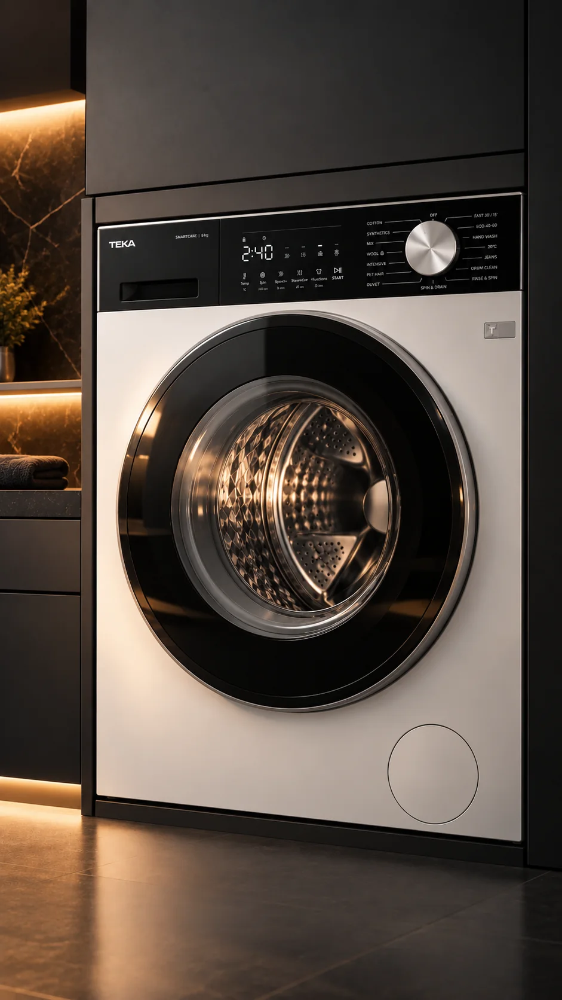

T
E
K
A
Mașini de spălat · Moldova
TEKA
RU
2
Catalog
Teka Moldova
· +373 68 27 27 02

Loc pentru fotografie
Mașină de spălat în baie
1080 × 1920 · webp
Casă › Mașini de spălat
Mașini de spălat
Spălat · Uscat · Inverter —
14 modele
Toate
Mașină de spălat
Uscător
Spălat + uscat
Toate
Mașină de spălat
Uscător
Spălat + uscat
Filtre
Adaugă în coș
Filtre
Resetează
Tip
Mașină de spălat
Uscător
Spălat + uscat
Instalare
Independent
Încorporabil
Arată
14
Recomandate ▾